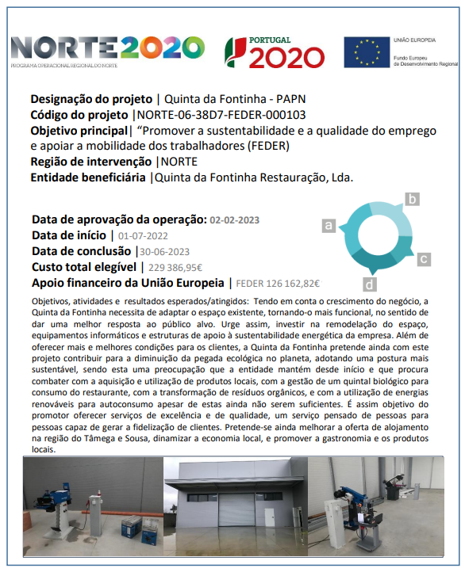

Projeto cofinanciado

Tendo em conta o crescimento do negócio, a Quinta da Fontinha necessita de adaptar o espaço existente, tornando-o mais funcional, no sentido de dar uma melhor resposta ao público alvo. Urge assim, investir na remodelação do espaço, equipamentos informáticos e estruturas de apoio à sustentabilidade energética da empresa.
Além de oferecer mais e melhores condições para os clientes, a Quinta da Fontinha pretende ainda com este projeto contribuir para a diminuição da pegada ecológica no planeta, adotando uma postura mais sustentável, sendo esta uma preocupação que a entidade mantém desde início e que procura combater com a aquisição e utilização de produtos locais, com a gestão de um quintal biológico para consumo do restaurante, com a transformação de resíduos orgânicos, e com a utilização de energias renováveis para autoconsumo apesar de estas ainda não serem suficientes.
É assim objetivo do promotor oferecer serviços de excelência e de qualidade, um serviço pensado de pessoas para pessoas capaz de gerar a fidelização de clientes. Pretende-se ainda melhorar a oferta de alojamento na região do Tâmega e Sousa, dinamizar a economia local, e promover a gastronomia e os produtos locais.